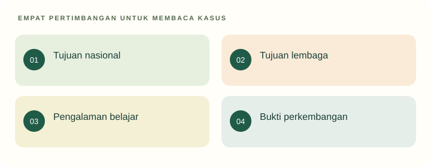

Tujuan pembelajaran
- Membedakan tujuan, fungsi, kegiatan, dan indikator.
- Menurunkan tujuan luas menjadi pengalaman belajar AUD yang masuk akal.
- Mengevaluasi ukuran keberhasilan yang terlalu sempit.
Apakah tujuan pendidikan AUD cukup dirumuskan sebagai “anak siap masuk SD”?
Sebuah RA mengiklankan keberhasilan program dari jumlah anak yang lancar membaca. Guru mengamati sebagian anak masih kesulitan meminta bantuan, menghadapi konflik, dan merawat barangnya sendiri.
Temukan persoalan konseptual
Sebelum membaca penjelasan, pisahkan kejadian yang dinyatakan dalam kasus dari dugaan Anda. Gunakan pertanyaan berikut untuk menyiapkan analisis.
- Apa tujuan pendidikan yang sedang dipertaruhkan?
- Pengalaman apa yang dialami anak, dan informasi apa yang belum tersedia?
- Konsep atau jenis sumber apa yang diperlukan untuk menilai tindakan pendidik?

Tujuan, fungsi, dan hasil
Tujuan menyatakan arah yang hendak dicapai. Fungsi menjelaskan peranan pendidikan bagi individu dan kehidupan bersama. Hasil adalah kondisi yang benar-benar muncul setelah proses berlangsung. Ketiganya berhubungan, tetapi tidak identik. Pendidikan dapat bertujuan mengembangkan kerja sama, sementara hasil aktual menunjukkan sebagian anak belum mendapat kesempatan berpartisipasi.
Karena itu, menyebut tujuan belum membuktikan keberhasilan. Mahasiswa perlu menilai keselarasan tujuan, pengalaman, dan bukti. Fungsi pewarisan budaya juga perlu disertai kritik: tidak semua kebiasaan yang diwariskan layak dipertahankan. Praktik yang merendahkan anak tidak menjadi benar hanya karena dianggap tradisi.
Tujuan nasional dan konteks PAUD
Pasal 3 UU 20/2003 memuat fungsi dan tujuan pendidikan nasional dengan cakupan perkembangan manusia yang luas. Di PAUD, arah tersebut diterjemahkan sesuai karakteristik anak, bukan disalin menjadi tuntutan akademik orang dewasa. Standar kompetensi lulusan dan standar isi yang relevan perlu dibaca pada bagian PAUD (Permendikdasmen 10/2025 dan 12/2025).
Kesiapan melanjutkan pendidikan merupakan salah satu orientasi, tetapi pengalaman anak hari ini juga memiliki nilai. Anak berhak mengalami hubungan aman, bermain, mengeksplorasi, dan berpartisipasi. Hindari mengukur kualitas seluruh program hanya dari membaca, menulis, atau berhitung. Kemampuan tersebut dapat dikembangkan dalam pengalaman bermakna tanpa menjadi satu-satunya ukuran.
Dari tujuan luas ke tujuan kegiatan
Tujuan luas seperti kemandirian perlu dijabarkan menjadi tindakan yang sesuai konteks. Dalam kegiatan merapikan alat, contoh tujuan operasionalnya adalah anak memilih alat yang menjadi tanggung jawabnya dan menaruhnya kembali dengan bantuan seperlunya. Kegiatan merapikan hanyalah sarana; kepatuhan tanpa pemahaman belum tentu mewakili keseluruhan tujuan.
Indikator adalah petunjuk untuk membaca perkembangan, bukan label permanen. Guru dapat mencatat apakah anak mengenali tempat alat, meminta bantuan, atau menawarkan bantuan kepada teman. Catatan beberapa kesempatan lebih informatif daripada satu penilaian “mandiri/tidak mandiri”. Untuk mahasiswa, latihan utamanya adalah menjelaskan alasan memilih indikator, bukan memperbanyak daftar perilaku.
Menilai ketegangan antartujuan
Dalam praktik, tujuan dapat saling menekan. Keinginan menyelesaikan banyak lembar kerja dapat mengurangi kesempatan berdialog; tuntutan tertib dapat mengurangi ruang eksplorasi. Pendidik perlu menentukan prioritas berdasarkan kebutuhan anak, konteks kegiatan, dan tanggung jawab lembaga. Tidak semua tujuan harus dicapai pada satu aktivitas.
Usulan perbaikan untuk program RA adalah memakai beberapa sumber bukti: hasil karya, percakapan, partisipasi, serta pengamatan kegiatan keseharian. Pemilihan ini harus dijelaskan kepada keluarga agar perubahan ukuran keberhasilan tidak dipahami sebagai ketiadaan arah. Tujuan religius, sosial, dan pengetahuan dapat saling mendukung ketika diwujudkan melalui pengalaman yang konkret.
Kembali ke kasus
Kelancaran membaca merupakan informasi tentang kemampuan tertentu. Ia tidak cukup mewakili mutu keseluruhan pendidikan RA. Analisis perlu memperluas tujuan dan bukti, sambil menghindari kesimpulan bahwa semua latihan literasi pasti merugikan.
Analisis ini merupakan contoh penalaran pedagogis. Pada situasi nyata, keputusan memerlukan informasi tentang anak dan konteks lembaga.
Latihan terbimbing
Perbaiki tujuan “anak menyelesaikan tiga lembar kerja”. Tentukan kemampuan yang sebenarnya dituju, pengalaman alternatif, dan satu bukti yang lebih dekat dengan kemampuan tersebut. Contoh: mengenali jumlah dapat diamati saat membagikan cangkir untuk teman.
Latihan mandiri
Rancang satu kegiatan berbagi alat dengan dua tujuan yang saling mendukung. Jelaskan kegiatan, peran anak, bukti perkembangan, dan kemungkinan tujuan yang belum dapat dinilai dari kegiatan itu.
- Konsep digunakan dengan tepat dan dijelaskan hubungannya dengan kasus.
- Fakta dipisahkan dari interpretasi; sumber mendukung jenis klaimnya.
- Tindakan konkret, menghargai anak, dan memiliki cara peninjauan.
Lihat pembahasan
Jumlah kegiatan yang diselesaikan.
Penyelesaian tugas belum cukup membuktikan kreativitas atau pemahaman. Perlu dilihat proses, keputusan anak, dan kaitannya dengan tujuan.
Refleksi calon pendidik
Ukuran keberhasilan apa yang selama ini saya anggap penting tetapi belum benar-benar mewakili perkembangan anak?
Catatan hanya disimpan di peramban ini. Tidak dikirim kepada dosen.
Intisari dan tindak lanjut
- Tujuan menyatakan arah, fungsi menyatakan peranan, dan hasil perlu dibuktikan.
- Tujuan PAUD mencakup perkembangan yang luas, bukan hanya keterampilan akademik awal.
- Indikator dipilih karena relevan dengan kemampuan yang dituju, bukan karena paling mudah dihitung.
Uji kembali pemahaman di atas melalui latihan mandiri. Jika alasan Anda belum menghubungkan konsep dan tindakan, baca ulang submateri terkait sebelum menandai selesai.
Referensi dan bacaan pendamping
Sumber untuk klaim khusus disebut pada uraian. Buku pendamping tidak dikutip langsung. Jenis dan batas penggunaan setiap rujukan dijelaskan di bawah.
- Republik Indonesia. (2003). Undang-Undang Nomor 20 Tahun 2003 tentang Sistem Pendidikan Nasional.Fokus Pasal 1, 3, 13, dan 28. Status UU secara keseluruhan tidak berarti seluruh pasal bebas perubahan atau putusan pengadilan.
- Kementerian Pendidikan Dasar dan Menengah. (2025). Peraturan Menteri Pendidikan Dasar dan Menengah Nomor 10 Tahun 2025 tentang Standar Kompetensi Lulusan pada Pendidikan Anak Usia Dini, Jenjang Pendidikan Dasar, dan Jenjang Pendidikan Menengah.Gunakan bagian PAUD. Capaian tidak ditafsirkan menjadi ujian kelulusan akademik bagi anak.
- Kementerian Pendidikan Dasar dan Menengah. (2025). Peraturan Menteri Pendidikan Dasar dan Menengah Nomor 12 Tahun 2025 tentang Standar Isi pada Pendidikan Anak Usia Dini, Jenjang Pendidikan Dasar, dan Jenjang Pendidikan Menengah.Ruang lingkup PAUD tidak identik dengan pemisahan mata pelajaran sekolah dasar.
- Kementerian Pendidikan, Kebudayaan, Riset, dan Teknologi. (2022). Peraturan Menteri Pendidikan, Kebudayaan, Riset, dan Teknologi Nomor 21 Tahun 2022 tentang Standar Penilaian Pendidikan pada Pendidikan Anak Usia Dini, Jenjang Pendidikan Dasar, dan Jenjang Pendidikan Menengah.Rujukan penilaian yang ditemukan dalam penelusuran. Ketentuan penilaian dalam Permendikbud 137/2014 telah dicabut melalui peraturan ini.